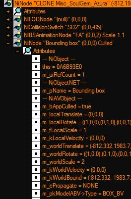
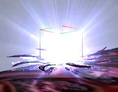

Around Bounding Box part 1
Различные примечания по этому объекту.
часть первая.
(т.к. много букв разделили на две половинки статью)
Bounding Box (здесь и далее (BB)или(ББ)
ББ по сути обычная нода (niNode) без шейпа, имеющая значение «Has Bounding Box» YES и правильное название (Bounding Box)!
Кроме Нод, возможно использовать также и шейпы, хотя в этом нет особого смысла, разве что, небольшое удобство в ряде случаев.
Если нода, или шейп, были названы как; Bounding Box, это внушит движку особое к ним отношение.
Т.е. они автоматически получат включение этого параметра в своих настройках силами движка игры.
И будут просчитываться в качества, так называемой PROXY геометрии, даже без установки флага "ХББ=1" в настройках ниф файла.
Основное назначение которой - ускорение и упрощение вычислений детектирования столкновений.
Здесь же рассматриваются особенности поведения названного именной ноды (ББ) в игре и редакторе.
Примечение.
Нифскоп 2.0 версии имеет более правильное декодирование параметра объектов (нод, шейпов) "has bounding box".
Где позволяет свободно менять тип; куб, или сфера.
Но для МВ это интересно, в основном только в прикладных целях, либо в каких-то весьма специфических случаях.
Т.е. нифскоп 1.1.3 позволяющий правильно использовать только куб, вполне достаточен для полноценного моддинга моделей под МВ.
Конечно, правка ниф.хмл под эту версию Нифскопа, привносит более правильные настройки.
Но делать это, скорее не рекомендуется, чем обратное.
Важно!
Т.е. активировать строку has bounding box = 1.
Далее, настроить объем ББ (xyz size + z position).
И только затем переименовать эту ноду в Bounding Box.
Это является обязательным условием для правильной работы ББ!
Имя, флаг, габариты и позиция.
Если выбранная нода не будет переименована - игра проигнорирует настройки и не будет учитывать такой объект в качестве системного.
Т.е. зона выделения, вокруг объекта в редакторе, не измениться, а существа будут иметь весь набор "глюков" о них см. далее.
Если объект был переименован, но объем не был настроен, игра, также, не сможет правильно работать с этим!
Что опять же приведет к разного рода глюкам.
Чаще всего - вылетам на рабочий стол.
Обращайте внимание!
ББ не используется для выбора объектов в редакторе!
Но лишь управляет размером области выделения вокруг объекта!
Т.е. ББ это "не материальный" объект, за него не возможно зацепиться мышью в редакторе!
Это особенно для актуально для ЛОДированных объектов, которые на удалении полностью скрывают свои "физические" детали.
Например, как та звезда Азуры (см. скриншоты здесь) которая заменяется спрайтам по мере удалении от камеры.
Поэтому, все активаторы и статики (в особенности состоящие из системы частиц)(см. модели огня из каминов) и пр, где в составе может находится ВВ, обязательно требуют наличия, постоянно видимого "физического" объекта (ака обычного шейпа) для выделения оных в редакторе!
А равно и для активации оных в игре(С)
Если "физического" объекта нет, объект будет невозможно перемещать по сцене редактора, или активировать в игре.
Это можно видеть на примере ванильных VFX эффектов магии.
Которые можно поместить в сцену, перетащив в окно рендеринга, но затем никак нельзя ни выделить, ни передвинуть курсором.
Для решения этой "задачи" удобно использовать дополнительный МАРКЕР объект.
Который будет видно только в редакторе.
ББ объектов (статиков, предметов и пр.) не отображается в сеансе игры!
Но только в редакторе.
Т.е. по команде TCB, можно увидеть размеры ББ только у существ и НПС, но не предметов!
ББ в них не будет выделен.
Однако, можно сделать так, чтобы зона ББ все-таки отображалась и в игре.
При этом, можно даже сделать несколько зон выделения!
В модели может быть только 1 ББ, второй не будет отображаться.
ББ, может находится в любом месте модели.
Т.е. как в корне, так и в любой из вложенных нод.
Однако, правильно помещать его в корень файла.
Для существ он должен быть всегда в корне, а для предметов, не обязательно.
Размер ББ влияют на дистанцию атаки существ!
Т.е. У существ с большой пастью, BB должен сильно выступать перед мордой!
Иначе, в момент выпада, камера окажется в «брюхе» существа, что выглядит весьма неважно.
Для исправления этого следует управлять размером ББ, а не его позицией!
Т.е. изменение позиции ББ в его настройках - не оказывает эффекта в игре!
ББ всегда приклеен к нулевым координатам существа!
Можно лишь менять позицию по Z координатам.
XY не влияют.
ББ используется для "ориентации существа в пространстве".
Если ББ в файле нет, то существо способно атаковать из-за барьера, если ББ есть - оно пытается обойти барьер для атаки.
*да, это странный момент который может давать некоторые плюсы при создании стационарных существ, на вроде Турелей (см. Симфонию).
*При этом барьер может быть совсем не высоким и стрелок вполне может, чисто технически, стрелять из-за него.
В ряде подобных случаев существо может в упор не замечать игрока, пока тот сам не атакует оное.
Либо, на существо, за барьером, срабатывают только стрелковые и атаки по области.
Атака мечом и точечная магия его не задевают, особенно если оно сидит за высоким барьером.
(данные стоит перепроверить перед использованием)
(также зависит от размера ББ у существа).
Помимо перемещения в мире и просчета попаданий в существо!
ББ отвечает за отображения размера частиц магии появляющихся вокруг объекта (НПС или существа) во время каста, или при поражении оной.
Просчет столкновений с объектами мира, попаданий магии и оружия, дистанций до активации - на каком расстоянии появится Имя существа и пр.
А также может использоваться для управлением размера выделения вокруг статичных объектов в редакторе.
Все это завязано на ББ!
Правильно размещенный ББ, позволяет создавать "подземных" существ.
Т.е. которые будут находится ниже поверхности (грунта, пола и пр.) вылезая только в момент атаки.
Собственно именно положение ББ и отвечает за размещение существа (на поверхности).
Т.е. если оставить ББ в его исходных координатах, т.е. нижней гранью по Z 0.0, а саму видимую сетку существа убрать ниже поверхности...
То да, ГРОБОИДЫ "порадуют" игрока своим Явлением в неурочный час.
См. тех же фуражиров квам из Симфонии, которые атакуют игрока передвигаясь под землей, или уникальных гробничных червей которые охраняют покой Короля Червей в его усыпальнице (это в захоронении Уршилаку).
|
|
|
|
|
модель смещена под пол лишь немного.
|
это более сильное смещение.
|
момент атаки, существо будет несколько выступать из под земли!
|
|
|
|
|
|
Пусто говорите?
|
А вот и нет!
|
Мы уже прыгаем к Вам!
|
При этом, все можно проделать прямо в Хниф файле, просто сместив позицию Bip01 по оси Z.
Т.к. именно эта именная нода, отвечает за все движении существа, а равно и за базовую позицию!
Хотя в этом есть один маленький, но критически важный, нюанс!
Делается это так:
- Bip01 (или Root bone) пакуется в простую, безымянную, ноду, которая и смещается на требуемую глубину под пол!
Это все(С)
Если же сместить саму bip01, то это не даст результата, т.к. анимация позиции будет переписана из Кф файла.
Но создание такой пустой ноды верхнего уровня, позволит обойти этот момент!
Главное, чтобы эта нода не имела имени!
Иначе, это нарушит иерархию и анимации не будут работать вообще!
|
|
|
|
Исходный вид файла.
|
И с добавлением дополнительной ноды.
Z -25.0000
|
Хотя, конечно, в идеале, будет более правильным сместить bip01 в 3д редакторе, так чтобы ее анимации записались в КФ файл со всеми поправками.
Но как можно видеть, простого смещения рутовой кости существа, в Хниф файле, будет достаточно!
Следует иметь в виду, что если сетка существа останется глубоко под землей после кончины, то взять с него лут станет затруднительным.
А также могут возникнуть иные проблемы связанные с просчетом его радиуса.
Однако, для атак существа и нанесения ему урона, подобное смещение не создает проблем.
Т.к. для расчетов всего этого используется ББ.
А еще ББ отвечает за положение объекта в воде.
Т.е. при погружении в воду, верхняя кромка ББ определит глубину погружения (нпс существа) по умолчанию.
Здесь ББ (изменен в xbase_animkna.nif) достигает до уровня пояса.
Отчего половина корпуса находится выше уровня воды.
Конечно это не помешает погрузиться под воду целиком, но при заплыве вдоль поверхности будет сказываться.
Этим можно пользоваться, создавая "водоплавающих" существ.
ГусиЛебедиЖукиВодомерки?
Выглядит вероятным!
Соответственно, более высокий ББ, позволит погрузить (существо, или НПС) под воду глубже.
Впрочем, как показали дальнейшие тесты, изменять положение ББ актуально только для игрока (нпс).
Для существ, правильнее, изменять позиции их видимых сеток оставляя позиции ББ без изменений.
Т.е. для плавающих в толще воды существ, изменение ББ, не будет играть роли.
А если добавить им спелл хождения по воде, они будут рассчитывать свою позицию по нижней кромке ББ.
Если не добавлять спелл хождения по воде, но только поместить существо, с обычным метод передвижение (walk) на воду, оно, не имея групп анимации плавания уйдет на дно, где и будет ходить. Т.к. просчет пойдет по нижней стороне ББ.
Изменять же позицию ББ для НПС = создание глобальных проблем на свою голову(С).
Однако, понимание общих принципов расчета положение существ и нпс, важно при создании различных анимаций и иных, скриптовых, ситуаций!
|
|
|
|
|
ББ еще более короткий.
(на воде отключены шейдеры)
|
А здесь наоборот, удлинен.
Видно, что уровень погружения реагирует на верхний край ББ и уровень воды.
|
Под водой хорошо видно, как смещается объект (здесь игрок) относительно габаритов ББ.
|
Обращайте внимание!
При скалировании игрока в игре через консоль, могут быть проблемы у зверорас!
Их ББ может остаться большего размера!
Т.е. там идет микс анимаций по видимости, что-то берется из базовых файлов, а что из файлов зверорас, иначе это сложно объяснить.
Отчего зверорасы получают два ББ!
Для "человеческих" рас, скалирование проходит нормально.
Наличие ББ у существ обязательно! (кроме особых случаев).
В случае если ББ нет, существо может получить необъятный радиус активации, а магический щит будет в несколько раз больше самого существа.
Т.е. ББ будет создан автоматически согласно радиусам объектов в хниф файле.
Т.к. ниф файл только скелет, а хниф как раз видимые сетки.
Можно полагать, что высчитывается на основе радиусов всех имеющихся шейпов.
Т.е. самый большой радиус послужит для авто генерации ББ.
Т.е. ББ, у существ, все равно создается, но уже автоматически по некоему усредненному значению на основе радиусов их сеток!
Что можно видеть по наличию в корне модели атрибутов указывающих на это, а также по контуру вокруг существа при использовании консоли (TCB).
Однако, как ни странно, отсутствующий в модели ББ, все же создает ряд проблем, о которых уже упоминалось.
Магические щиты, накладываются НА этот объект.
Т.е. размер щита прямо зависит от размера ББ! Да, модель будет скалирована.
Чем больше ББ, тем большего размера станет "капсула" магического щита.
Если же ББ в файле нет - размер щита будет рассчитан по крайним точкам видимых сеток существа, что и создает громадные "капсулы".
Т.е. сначала, игра, создает свое представление о ББ, а затем накладывает щит согласно тому, что она там "автосгенерила".
Т.е. если выбрать режим Сферы в базовых файлах анимации, то это может привести к большим проблемам с отображением мантий и прочего.
Но это довольно "извращенный" случай, который мало вероятен в обычном моделлинге.
ББ также может использовать в статиках, предмета и активаторах, при этом, вместе с РутКолиженом.
РутКолизия будет отвечать за просчет столкновений, а ББ за размер выделения объекта в редакторе.
Это позволяет удобно управлять размером коробки выделения объекта.
Т.е. будет выделяться не весь объект по крайним точкам оного, но лишь зона заданная в параметрах ВВ.
Т.е. да, движок создает ББ для всех объектов, а потом накладывает на это выделение.
Создание ББ в файле, весьма удобно при работе с большими объектами в редакторе.
Т.к. они перестают загораживать маленькие, которые становиться удобно размещать на поверхности больших объектов.
Bounding Box can also be used to fix the CS selection box if you have a mesh with screwed up mesh centers, lol.
Примеры можно увидеть в плагинах Abota.
Корабль возле Сейда Нин имеет подобные настройки.
ББ, в статиках и активаторах, влияет на радиус ExplodeSpell от объекта!
Т.е. можно полностью скрыть эффект магического эффекта вокруг кастующего объекта.
Как ни странно но именно ББ а не РК отвечает за радиус.
Т.е. эффект взрыва магии вокруг кастующего объекта, учитывает габариты именно ББ, полностью игнорируя сетку находящуюся в РК.
Очень большой и обширный ББ будет (фактически) скрывать эффект каста от триолитов.
Или прочих объектов использующих ExplodeSpell команду в скриптах.
Т.е. если ББ в разы больше самого объекта, то магический эффект каста окажется вне поля зрения ГГ.
А если сама поверхность объекта использует текстуру с черным бампом, то эффект станет практически не заметен.
На активации Триолита это не как не скажется, равно и на наложение эффектов магии на игрока.
Однако, следует учитывать влияние ББ на положение плашки с названием объекта.
Если сделать ББ слишком большим и дополнительно не подправить его позицию, плашка окажется в неудобном месте...
ББ влияет на дистанцию и положение, в котором появится плашка с названием объекта.
Работает, как для предметов, так и для существ.
Т.е. ББ можно использовать для контроля за позицией сообщения с именем объекта которого "касается" прицел Игрока!
Особенно полезно, если некий объект не хочет выводить сообщение в удобном месте, постоянно показывая оное выше видимых сеток.
Или в случаях слишком больших радиусов у скиненных объектов (броня, существа).
Т.е. добавление ББ, в ряде случаев, позволит решить эту проблему.
Например добавив ББ в некую "большую" модель, можно добиться, что плашка будет находится постоянно рядом с курсором.
И хотя сообщение появляется только при наведении курсора на видимую сетку модели, положение оной (плашки) управляется размерами ББ!
Если упаковать часть сеток модели в collisionSwitchNode, плашка с названием, не будет появляться при прохождении прицела через их сетки!
Такая упаковка весьма полезна для моделей использующих спрайты, как показано на этих скриншотах.
Еще удобно создавать Призраков.
Который вовсе нельзя будет "залутать", или поговорить, но это отдельная тема.
К сожалению, задать ЗОНУ активации объекта, через ББ - невозможно.
Т.е. только положением плашки можно управлять.
Но нельзя сделать так, чтобы "название" появлялось только при наведении на область ББ.
|
|
|
|
|
Здесь есть ББ, только игра его не показывает. ^-^
Значение 25 25 z45.
Плашка выползает по верхней кромке ББ, когда курсор "касается" видимых сеток объекта.
|
Здесь же ББ = 1.1.1
И плашка двигается рядом с курсором.
Т.е. если провести по объекту курсором, название будет двигаться, словно приклеенное, не пытаясь убежать в угол экрана.
Как это видно на соседних скриншотах.
|
А здесь нет ББ в виде именного объекта!
Не смотря на то, что игра (TCB) нарисовала контур выделения вокруг шейпов Звезды.
Отчего, сообщение, появляется сразу же при "касании" ореола прицелом и болтается на максимально неудобном удалении от центра объекта.
Высчитывая свое положение исходя из данных о его (ореола) радиусе (вероятно).
|
Также, ББ может использоваться в метательном оружии.
Стрелы, дротики, болты, магические заряды... впрочем они тоже стрелы.
Где позволяет обойти проблему преждевременного взрыва снаряда.
Т.е. снаряд, имеющий ореол, сможет пролетать сквозь узкие места не детонируя преждевременно об их края.
Что интересно, ББ существ и НПС не помещаются в сцену игру, как таковые!
Т.е. в графике сцены не появляется ноды с именем Bounding Box (которая имеется в файле существа и нпс).
Однако, по команде TCB можно точно видеть, что он все же имеется!
И все изменение объема, внесенные в ниф файле, соответствуют видимым вокруг существа линиям.
Возникает вопрос, что же собственно происходит...
Но, если вызвать консоль и набрать TCB, а затем SSG, то можно увидеть вот такой занятный объект:
Mob Bound
В редакторе, по Ф10, ничего подобного не отмечается.
Т.е. существа не получают этой ноды!
Но niLines напрямую накладываются на зону заданную Bounding Box в файле существа (или иного объекта).
Т.е. в редакторе, все и вся являются рядовыми объектами и получают выделение на "общих правах" без создания дополнительных нод.
По видимости, "Mod Bound" в игре, это костыль, который делает видимым не видимое.
А вот сама зона, оказывается, перекочевывает из настроек ББ, в атрибуты корня файла!
И при этом, опять же, видно это только в игре.
Во всех случаях, что для biped creatures, что для NPC, что для других типов существ (walk, swims) значения одинаковы.
Union + два вложенных бокса.
Это отвечает на вопрос, отчего ББ вокруг существ (нпс) имеет дополнительную линию в нижней части.
Там находится второй ББ!
Т.е. игра создает составную зоны прокси геометрии вокруг "живых" объектов.
Зачем, не ясно.
Предположение.
Возможно сей костыль, с созданием Mob Bound, связан с кривой работой niLines объектов в движке?
т.к. изучение движка, показали наличие серьезного бага в этом элементе.
Отчего можно думать, что беседка не стала морочиться на исправление и сделала "костыль".
Поэтому в редакторе все объекты выделяются через использование niLines.
А в игре, к объектам добавляется примитив (куб) с настройками WireFrame, что создает сходный с niLines эффект.
Отчасти, даже более заметный и удобный в наблюдении.
Но это простое предположение, что там на самом деле было, Векх ведает то(С)
Т.к. Path Grid вполне себе свободно использует линии для связи между "чекпойнтами", как в игре, так и в редакторе.
Примечание.
По видимости не стоит применять значение Union для объекта называемого Bounding Box в файлах существ.
Т.е. если такое сделать, редактор улетит на рабочий стол.
Видимо дело в оптимизациях которая игра автоматически добавляет объекту с этим системным названием.
В "неживых" моделях, можно совмещать и системное имя (bounding box) и различные значения настроек... впрочем толку от этого будет мало.
Union можно "применить" к любой ноде, или шейпу, не имеющим системного названия и в файлах существ, но опять же, смысла особого не наблюдается.
Примечание.
Нифскоп 2.0 имеет более точные данные по прокси геометрии объектов.
Т.е. переключить режим с бокса на сферу, в настройках нод и шейпов, стало возможным.
НО!
Данные не совсем точны. Имеются ошибки в значении некоторых параметров.
А режим ромба (капсулы) и вовсе не подходит для МВ.
Так или иначе, для МВ, оптимальным будет:
- всегда использовать режим коробки (box) с чем, замечательно справляется Нифскоп 1.1.3.
Все остальные режимы фактически мало актуальны, а для существ так и вовсе вредны.
Для "неживых" объектов, ББ из файла модели работает в полной мере и отображаются в графике сцены.


ББ (здесь) 5 5 5И как было писано выше, управляет зоной выделения объекта.
Но для "живых" начинаются странности. То Mod bound создается, то ББ в редакторе не отображается вовсе...
Тип ББ оказывает влияние на видимые сетки существа!
Т.е. не смотря на какие-то странные действия движка игры, всегда создающего ББ для "живых" объектов, из хниф файла, учитывается не только объем зоны. Но и тип оной (коробка, сфера, или пр.)!
Сфера покажет заметное расширение радиуса, Бокс позволит настроить объем более точно, а ромб... исказит существо в странной проекции!
Если конечно вообще согласится загрузится в игру.
При этом, неправильные настройки сферы, также исказят имеющие скининг детали существа (брони, или одежды).
Т.е. зоны прокси геометрии могут оказывать влияние на видимые сетки существ (и одежду НПС)!
Скриншоты этого безобразия, см. здесь.
Настройки для ниф.хмл файла - см. здесь. Нифскоп 1.1.3, по умолчанию, не умеет корректно создавать что-то отличное от БОКСа.